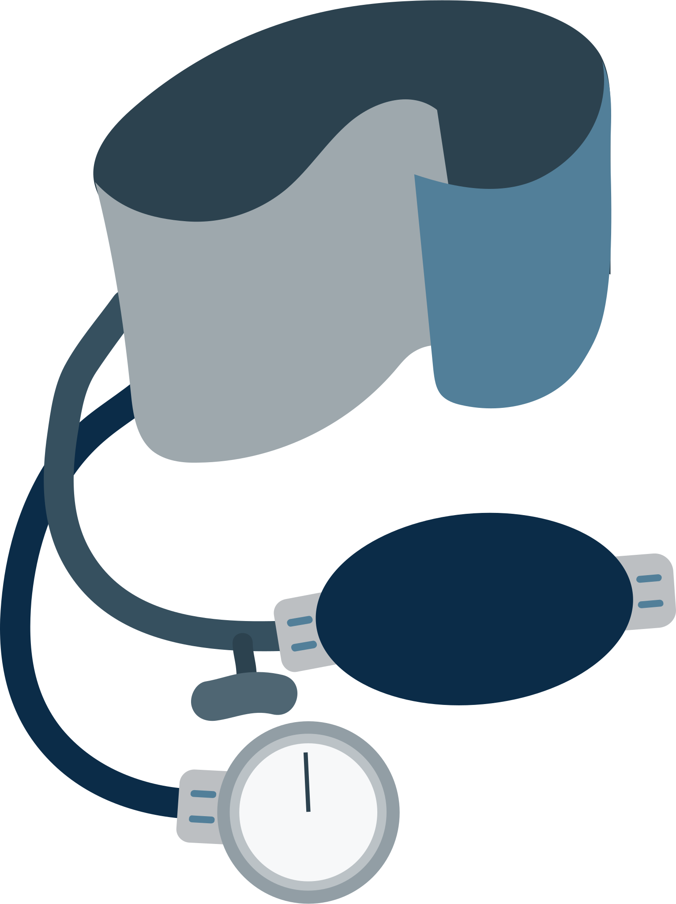

فوائد النشاط البدني
إن رفع مستوى النشاط البدني الخاص بك يعد أحد أفضل الوسائل للوقاية من مخاطر الأمراض المزمنة مثل داء السكري من النوع الثاني وأمراض القلب. وثمة عدد من المزايا الأخرى كالآتي:
-

تحسين مستوى ضغط الدم والحد من دهون البطن
-

تقوية عضلات القلب والحد من خطورة الإصابة بأمراض القلب.
-

خفض مستويات البروتين الدهني منخفض الكثافة الضار صحيًا وزيادة معدلات البروتين المرتفع الكثافة المفيد صحياً في كوليسترول الدم.
-

خفض مستوى التوتر والقلق والحد من الاكتئاب.
-

حرق السُعرات الحرارية لمساعدتك في الحفاظ على الوزن الصحي.
-

زيادة معدل الطاقة في جسمك لمزاولة الأنشطة اليومية.
-
مساعدتك في النوم الصحي بشكل أفضل.
-
تقوية عضلات وعظام جسمك والحفاظ على مرونة المفاصل.